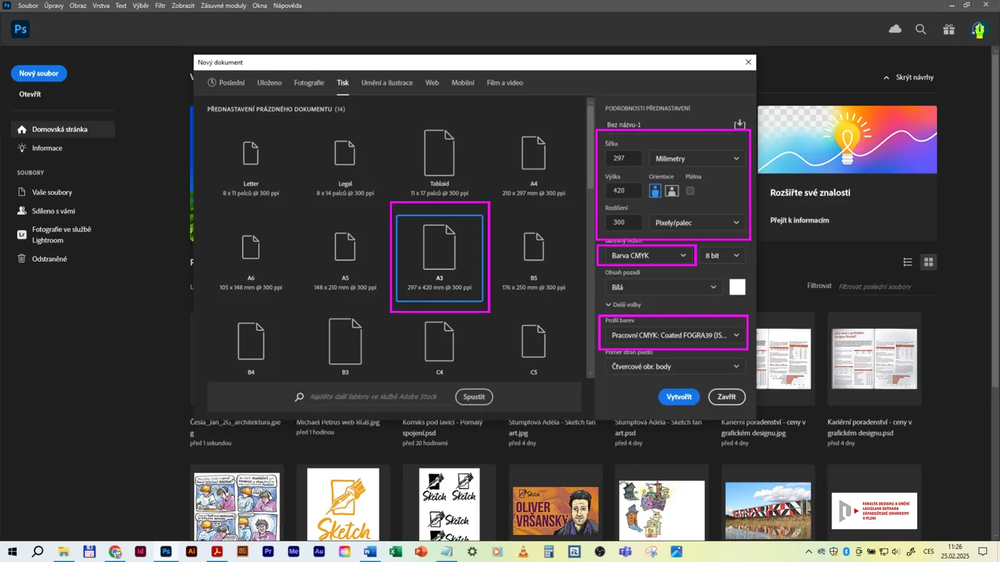

Maturitní otázka 10· Adobe Photoshop
Photoshop – digitální malba, štětce a stopy
Plátno A3 na šířku, od začátku v CMYK, s rozlišením a výstupním profilem pro tisk. Na grafickém tabletu namaluješ skicu herní postavy ze tří pohledů (přední, boční, zadní). Během práce si uložíš alespoň tři štětce s různým nastavením – tenký neprůhledný pro linku, poloprůhledný s nižší hustotou pro překryvné plochy a velký průhledný pro velké plochy. Pracuješ ve vrstvách a uložíš tak, aby byly zachovány parametry pro tiskovou reprodukci.
- PhotoshopA3 na šířku, CMYK, 300 ppi, FOGRA39
- TabletWacom Intuos – přítlak
- Štětce3 uložené předvolby
- VýstupTIFF/PSD pro tisk
Praktická část Co se obvykle chce
- Plátno A3 na šířku, dokument od začátku v CMYK, odpovídající rozlišení pro tisk a vhodný výstupní cílový profil.
- S grafickým tabletem skica barevného návrhu herní postavy ze tří pohledů – přední, boční, zadní.
- Uložit alespoň tři štětce: 1) plná neprůhledná sytost + tenká stopa (čárová skica), 2) částečná průhlednost + snížená hustota (překryvné barevné plochy), 3) velká stopa + výrazná průhlednost (velké plochy).
- Více vrstev; hotovou malbu uložit do formátu, který zachová parametry pro tiskovou reprodukci.
Teoretická část Co musíš umět vysvětlit
- Jaké typy štětců jsi použil a jak jsi nastavil parametry dokumentu podle zadání.
- Jak jsi pracoval s vrstvami a jaké další nástroje jsi využil.
- Obecné možnosti a využití digitální malby v grafické praxi – kde a jak, jaká pravidla dodržovat.
Digitální malbu máš probranou ve 2. ročníku: Malba – Tablet, A3 a export CMYK a Charakter postavy.
Plátno A3 pro tisk
Tahle otázka je výjimka: pracuješ v CMYK od začátku. Důvod: zadání chce, abys od první stopy viděl barvy tak, jak se vytisknou.
- : pracovní prostor CMYK Coated FOGRA39 (ISO 12647-2:2004), RGB sRGB. (Jednou, platí pro všechny dokumenty.)
- Ctrl+N › Tisk › A3, na šířku (420 × 297 mm), Rozlišení 300 ppi, Barevný režim: Barva CMYK, 8 bit, pozadí bílé, Profil barev: Coated FOGRA39 (Rozšířené volby). Výsledek: 4961 × 3508 px.
- Ulož hned jako PSD (vrstvy). Zapni – v CMYK nic nesvítí, protože všechny barvy jsou tisknutelné; v panelu Barvy vybírej jezdci CMYK nebo z Vzorníku.
- Tablet: ovladač Wacom nainstalovaný (návod na OneDrive), v Photoshopu ; v panelu Nastavení štětce Dynamika tvaru › Řízení: Přítlak pera. Leváci: nastavení v ovladači (orientace).
- Proč CMYK od začátku: v RGB by sytá zelená/modrá/oranžová vypadala jinak než v tisku; CMYK má menší gamut (lekce 05). Nevýhody: některé filtry a režimy prolnutí v CMYK nefungují, soubor je větší (4 kanály), obraz pro web se musí převést do RGB.

Štětce a stopy: parametry a tři předvolby
Štětec = stopa (tvar hrotu) + nastavení (velikost, tvrdost, krytí, hustota, dynamika). Tři předvolby ze zadání jsou tři základní „nástroje“ každé digitální malby.
Parametry v pruhu voleb a v panelu Nastavení štětce (F5)
- Velikost (px) – [ ]; Tvrdost (0–100 %) – ostrý × měkký okraj, Shift+[ ].
- Krytí (opacity) – maximální neprůhlednost tahu; při jednom tahu se barva přes sebe nesčítá. Číslice 1–0 = 10–100 %.
- Hustota / Tok (flow) – kolik barvy se nanese při každém průchodu; nízký tok se v jednom tahu vrství jako skutečná barva. Shift+číslice.
- Vyhlazení – stabilizace tahu (10–30 % pro linky).
- Dynamika tvaru – kolísání velikosti řízené přítlakem pera, úhel, zaoblení; Rozptyl; Textura; Dvojitý štětec; Dynamika barvy; Přenos – kolísání krytí/toku přítlakem; Nanášení (wet, mix) pro mísení; Rozestup (spacing) – 1–25 %.
- Režim prolnutí štětce (Násobit pro stíny), Airbrush (hromadí se při držení).
- Tvar hrotu: kulatý tvrdý/měkký, plochý, štětinový, texturované stopy (uhel, pastel); vlastní stopa: z výběru.
Tři štětce podle zadání (ulož do panelu Štětce › Nový štětec)
| Štětec | Nastavení | K čemu |
|---|---|---|
| 1 · Linka | kulatý, tvrdost 90–100 %, velikost 6–10 px, krytí 100 %, tok 100 %, dynamika tvaru: velikost řízená přítlakem (min. průměr 10 %), vyhlazení 20 % | čárová skica, kontury, detaily |
| 2 · Překryvné plochy | kulatý, tvrdost 50–70 %, velikost 40–80 px, krytí 50–60 %, tok 30–40 %, přenos: krytí řízené přítlakem | lokální barvy, stíny a světla vrstvené přes sebe, modelace |
| 3 · Velké plochy | kulatý měkký (tvrdost 0–20 %) nebo plochý, velikost 300–600 px, krytí 20–30 %, tok 20 %, airbrush | pozadí, podmalba, atmosféra, velké přechody |
Panel Štětce (ne Nastavení štětce): tlačítko Vytvořit nový štětec → název (Linka, Plochy, Velké), zaškrtnout Zahrnout nastavení nástroje a Zahrnout barvu podle potřeby. Nabídka panelu › Exportovat vybrané štětce → soubor .abr – přenositelná sada (ulož ji k odevzdání).
Laboratoř štětce
Maluj myší nebo perem do plátna a sleduj, jak krytí, tok a tvrdost mění stopu. Tři tlačítka nastaví tři štětce ze zadání.
Štětec: velikost, tvrdost, krytí, tok
Táhni myší v plátněHerní postava ze tří pohledů (character sheet)
Přední, boční a zadní pohled na stejnou postavu ve stejném měřítku – tzv. turnaround / model sheet, podle kterého 3D modelář nebo animátor postavu staví.
Jak na to rychle
- Vodítka: vrstva „linky“, štětec 1, vodorovné čáry (Shift+klik) na výšky hlavy, ramen, pasu, kolen, chodidel. Postava 7–8 hlav (realistická) nebo 3–5 hlav (stylizovaná, hra) – podle stylu hry.
- Silueta: štětec 3 nebo laso + výplň, jen tvar bez detailů – postava musí být rozpoznatelná jako černý obrys (tvarový jazyk: kruh = přátelský, čtverec = silný, trojúhelník = nebezpečný – viz Malba › Charakter).
- Přední pohled nejdřív (symetrie: nakresli polovinu, duplikovat vrstvu, Úpravy › Transformovat › Převrátit vodorovně, sloučit), pak boční (stejné výšky, profil, kam jde nos a chodidla) a zadní (kopie přední siluety, změnit vnitřní kresbu – vlasy, záda, výstroj).
- Lokální barvy štětcem 2 na vrstvě pod linkou (nebo laso + výplň pro ploché barvy); 3–4 barvy postavy, stejná paleta na všech pohledech (Vzorník nebo kapátko Alt).
- Stíny a světla štětcem 2 v režimu Násobit (stíny) / Závoj (světla), jedno světlo shora. Pozadí štětcem 3 – neutrální, aby postava vystoupila.
- Popisky: jméno postavy, pohledy, vzorky barev (swatche) – component sheet.
Vrstvy a další nástroje
Struktura vrstev je to, co komise uvidí jako první. Pojmenuj je.
Doporučená struktura vrstev
- Popisky (text)
- Linka (štětec 1, režim Násobit)
- Světla (Závoj / Zesvětlit barvy)
- Stíny (Násobit)
- Barvy – oděv / kůže / vlasy (ploché barvy, každá zvlášť nebo s ořezovými maskami nad siluetou)
- Silueta (zamknout průhlednost 🔒 – pak maluješ jen uvnitř)
- Vodítka (krytí 30 %, nakonec skrýt)
- Pozadí
Skupiny (Ctrl+G) pro každý pohled: Přední / Boční / Zadní.
Vrstvové triky
- Zamknout průhledné pixely – malba jen tam, kde už něco je (stíny na oděvu bez přetahování).
- Ořezová maska (Alt+klik mezi vrstvami) – vrstva stínů připnutá k siluetě.
- Režimy prolnutí: Násobit (stín), Závoj / Zesvětlit barvy (světlo, záře), Překrýt (tónování), Barva (kolorování šedé podmalby).
- Krytí vrstvy × krytí štětce – dvě různé věci.
- Maska vrstvy místo gumy; Vrstvy úprav (Křivky, Odstín a sytost, Vyvážení barev) s ořezovou maskou na postavu.
- Inteligentní objekt pro vložené reference (nezničí se při transformaci).
Další nástroje malíře
- Laso + výplň (Alt+Backspace) – rychlé ploché barvy; Kouzelná hůlka na siluetu.
- Rozmazávání / Prst, Mix štětec – mísení barev; Rozostření – měkké přechody.
- Převrátit plátno vodorovně (Obraz › Otočení obrazu) – kontrola proporcí; Otočení zobrazení (R) – pohodlné tahy.
- Kapátko (Alt při štětci), Vzorník s paletou postavy, Barevný kruh (HUD: Alt+Shift+pravý klik).
- Historie / snímky; Transformace (Ctrl+T, Pokřivit, Loutkové pokřivení) pro úpravu pózy.
- Přechod a Gradient map pro atmosféru pozadí; Filtr › Zostřit na konec.
Digitální malba v grafické praxi
Kde se používá, jaké má výhody a pravidla – to je druhá polovina obhajoby.
Kde
- Herní průmysl: concept art (postavy, prostředí, props), character sheety, textury, UI, splash arty.
- Film a animace: concept design, matte painting (digitální kulisy – návod na OneDrive), storyboardy, pozadí.
- Ilustrace: knižní, časopisecká, dětská, obálky, editorial.
- Reklama: vizualizace, retuš a dokreslování fotografií, klíčové vizuály.
- Komiks a webtoon, karetní hry, merchandising, tetování, architektonické vizualizace (dokreslování renderů).
Výhody a nevýhody
- + Zpět, vrstvy, nekonečné opravy, kopírování, transformace, barevné úpravy, rychlé varianty, přímý výstup do tisku i na web, žádný materiál.
- + Reference a fotobash (fotky jako podklad), 3D podklady (Blender → malba přes render).
- − Zpočátku „plastický“ vzhled, sklon k přetahování přes Ctrl+Z, závislost na tabletu a kalibraci monitoru, soubor A3/300 ppi má stovky MB.
- Programy: Photoshop, Krita (zdarma), Clip Studio Paint, Procreate (iPad), Corel Painter, Autodesk SketchBook, Rebelle, Blender Grease Pencil.
Pravidla, která platí stejně jako v ruční malbě
- Od celku k detailu: silueta → velké plochy → tóny → detaily. Detaily jen tam, kam se má divák dívat.
- Jeden zdroj světla; tonální hodnoty důležitější než barva (zkontroluj ve stupních šedi – vrstva úprav Černobílý).
- Omezená paleta (3–5 barev + odstíny); teplé × studené; barva stínu není černá.
- Proporce a anatomie (kánon, lekce 16); kompozice (třetiny, zlatý řez); perspektiva u prostředí.
- Málo štětců (3–5), velké tahy, převracet plátno, pracovat z referencí, ne obkreslovat cizí práce.
- Technika: dokument pro cíl (tisk CMYK 300 ppi A3 / obrazovka sRGB), nedestruktivně, pravidelně ukládat (PSD), verze.
Postup pro 30 minut
Skica, ne hotová ilustrace. Komise hodnotí nastavení dokumentu, štětce, vrstvy a tři čitelné pohledy.
- 0–3minDokument
Nastavení barev FOGRA39 → Nový: A3 na šířku, 300 ppi, CMYK 8 bit, profil FOGRA39. Uložit PSD. Tablet: přítlak funguje?
- 3–8minTři štětce
Nastav a ulož Linka / Plochy / Velké (panel Štětce › nový štětec, zahrnout nastavení nástroje). Exportovat vybrané → .abr do složky.
- 8–11minVodítka a rozvržení
Vrstva Vodítka: 6 vodorovných linek, tři svislé osy pro tři pohledy. Vrstva Pozadí: štětec 3, neutrální tón.
- 11–19minSiluety a linka
Přední silueta (polovina + zrcadlit), boční, zadní (kopie přední). Vrstva Linka štětcem 1: hlavní tvary, obličej jen náznak, výstroj.
- 19–26minBarvy a stíny
Vrstvy Barvy (zamknout průhlednost / ořezové masky): 3–4 barvy štětcem 2 nebo laso+výplň, stejné na všech pohledech. Vrstva Stíny (Násobit) štětcem 2, světlo shora. Pár světel.
- 26–30minUložení
Popisky (text). Skrýt vodítka. Uložit PSD (vrstvy, CMYK, profil). Uložit jako TIFF (LZW, vložit profil, bez vrstev nebo s nimi) – tiskový výstup. Pro ukázku JPEG v RGB (Exportovat jako, sRGB) – vysvětlit rozdíl.
Co říct komisi
„Dokument je A3 na šířku, 4961 × 3508 px, 300 ppi, CMYK 8 bit s profilem Coated FOGRA39 – od začátku vidím tiskové barvy. Tři štětce: Linka (tvrdý, 8 px, krytí a tok 100 %, velikost přítlakem), Plochy (tvrdost 60 %, 60 px, krytí 50 %, tok 35 %), Velké (měkký, 400 px, krytí 25 %, tok 20 %, airbrush) – uložené v panelu Štětce a exportované do .abr. Vrstvy: pozadí, vodítka, silueta se zamčenou průhledností, barvy, stíny v Násobit, světla v Závoj, linka, popisky; skupiny pro tři pohledy. Uloženo jako PSD a TIFF s vloženým profilem – TIFF je bezztrátový, umí CMYK a tiskárna ho přijme.“
Časté chyby
Na co se komise ptá
Jak jsi nastavil dokument a proč CMYK od začátku?
A3 na šířku, 300 ppi (4961 × 3508 px), CMYK 8 bit, profil Coated FOGRA39 (nastavený i v Nastavení barev). V CMYK vidím od první stopy barvy tak, jak se vytisknou – RGB má větší gamut a syté barvy by se při převodu posunuly. Cena: méně filtrů, větší soubor, pro web převést do sRGB.Jaký je rozdíl mezi krytím a tokem štětce?
Krytí je maximální neprůhlednost jednoho tahu – přejezdy v rámci tahu se nesčítají. Tok je množství barvy při každém průchodu – s nízkým tokem se barva v jednom tahu vrství jako skutečný štětec. Linka: obojí 100 %; plochy: krytí 50 %, tok 35 %; velké plochy: nízké obojí + airbrush.Jaké tři štětce jsi uložil a čím se liší?
Linka – tvrdý kulatý, malý, plné krytí, velikost řízená přítlakem; Plochy – polotvrdý, střední, poloviční krytí a snížený tok, krytí řízené přítlakem, pro vrstvení barev; Velké plochy – měkký velký, nízké krytí a tok, airbrush, pro pozadí a přechody. Uložené v panelu Štětce se zahrnutým nastavením nástroje a exportované do .abr.Jak jsi pracoval s vrstvami?
Oddělené vrstvy pozadí, vodítka, silueta (zamknutá průhlednost), barvy, stíny v režimu Násobit, světla v Závoj, linka, popisky; skupiny pro tři pohledy; ořezové masky pro stíny na siluetě; vrstvy úprav s ořezovou maskou pro barevné sladění; masky místo gumy.Proč tři pohledy a jak jsi zajistil stejnou proporci?
Character sheet (turnaround) slouží 3D modelářům a animátorům – postava musí být ze všech stran konzistentní. Vodorovné vodicí linky (temeno, brada, ramena, pas, kolena, chodidla) na samostatné vrstvě drží stejnou výšku; zadní pohled vychází z kopie přední siluety.Kde se digitální malba používá a jaká pravidla platí?
Concept art pro hry a film, ilustrace, matte painting, reklamní vizualizace a retuš, komiks, textury. Pravidla: od celku k detailu, jeden zdroj světla, tonální hodnoty před barvou, omezená paleta, proporce a kompozice, málo štětců, reference bez obkreslování, nedestruktivní práce, dokument podle cíle (tisk CMYK 300 ppi / web sRGB).Jaký formát zachová parametry pro tisk?
TIFF (bezztrátový, CMYK, 300 ppi, vložený profil, může i vrstvy) nebo PSD; JPEG v maximální kvalitě CMYK jako nouzovka; PDF/X přes Photoshop PDF. Ne PNG (jen RGB), ne JPEG RGB 72 ppi.